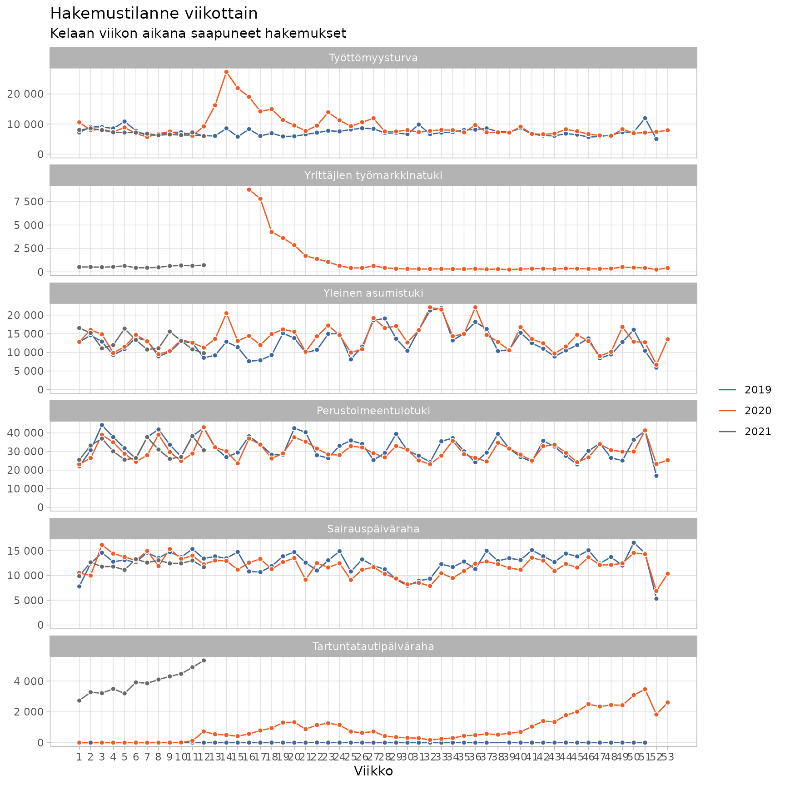
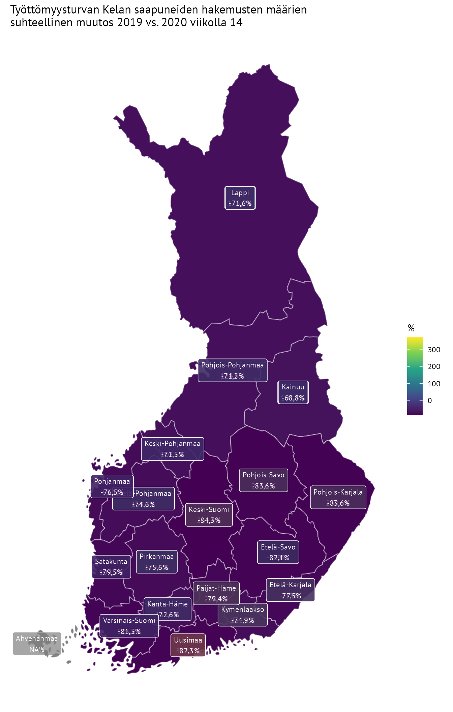

Sivu päivitetty 2021-01-21 10:28:33
Data päivitetty 2021-01-21 10:03:04
Etuushakemukset data
- Lataa data tiedostona: data_etuudet.csv
- Lataa metadata tiedostona: metadata_etuudet.csv
Datan lukeminen
library(dplyr)
library(readr)
library(forcats)
cols(
etuus = col_character(),
vuosi = col_integer(),
aikatyyppi = col_character(),
kuukausi = col_integer(),
viikko = col_integer(),
paiva = col_date(),
viikonpaiva = col_character(),
alue = col_character(),
ikaluokka = col_character(),
sukupuoli = col_character(),
saapuneet_hakemukset = col_double(),
updated = col_datetime()
) -> data_cols
dat <- readr::read_csv("https://raw.githubusercontent.com/kelaresearchandanalytics/koronamittarit/master/docs/data/data_etuudet.csv",
col_types = data_cols) %>%
# releveloidaan ikäluokka
mutate(ikaluokka = factor(ikaluokka),
ikaluokka = fct_relevel(ikaluokka, c("kaikki","alle 25"))) %>%
# Etuuksien järjestys
mutate(etuus = factor(etuus, levels = c("Työttömyysturva",
"Yrittäjien työmarkkinatuki",
"Yleinen asumistuki",
"Perustoimeentulotuki",
"Sairauspäiväraha",
"Tartuntatautipäiväraha",
"Epidemiatuki")),
vuosi = factor(vuosi)) %>%
arrange(etuus,viikko,paiva)
head(dat)## # A tibble: 6 x 19
## etuus vuosi aikatyyppi kuukausi viikko paiva viikonpaiva alue ikaluokka
## <fct> <fct> <chr> <int> <int> <date> <chr> <chr> <fct>
## 1 Työt… 2020 paiva 1 1 2020-01-01 keskiviikko Koko… kaikki
## 2 Työt… 2020 paiva 1 1 2020-01-02 torstai Koko… kaikki
## 3 Työt… 2020 paiva 1 1 2020-01-03 perjantai Koko… kaikki
## 4 Työt… 2020 paiva 1 1 2020-01-04 lauantai Koko… kaikki
## 5 Työt… 2020 paiva 1 1 2020-01-05 sunnuntai Koko… kaikki
## 6 Työt… 2021 paiva 1 1 2021-01-04 maanantai Koko… kaikki
## # … with 10 more variables: sukupuoli <chr>, saapuneet_hakemukset <dbl>,
## # data <chr>, saajat_kaikki <lgl>, saajat_uudet <lgl>,
## # saajakotitaloudet_kaikki <lgl>, saajakotitaloudet_uudet <lgl>,
## # saajaruokakunnat_kaikki <lgl>, saajaruokakunnat_uudet <lgl>, updated <dttm>Aikasarja viikkotasolla etuuksittain
library(ggplot2)
datplot <- dat %>%
dplyr::filter(aikatyyppi == "viikko",
ikaluokka == "kaikki",
sukupuoli == "kaikki",
alue == "Koko Suomi") %>%
mutate(viikko = as.integer(viikko))
ggplot(datplot,
aes(x = viikko,
y = saapuneet_hakemukset,
color = vuosi,
fill = vuosi)) +
geom_line() +
geom_point(shape = 21, color = "white", size = 1.6, show.legend = FALSE) +
facet_wrap(~etuus, ncol = 1, scales = "free_y") +
scale_x_continuous(breaks = 1:max(datplot$viikko)) +
labs(fill = NULL,
color = NULL,
y = NULL,
title = "Hakemustilanne viikottain",
subtitle = "Kelaan viikon aikana saapuneet hakemukset",
x = "Viikko") +
scale_fill_manual(values = c("#3F679F","#F15B23","dim grey")) +
scale_color_manual(values = c("#3F679F","#F15B23","dim grey")) +
theme_light() +
theme(legend.position = "right",
legend.direction = "vertical",
panel.grid.minor = element_blank()) +
scale_y_continuous(labels = function(x) format(x, big.mark = " ",
scientific = FALSE),
limits = c(0,NA))
Työttömyysturvan hakemusten ero maakunnittain kartalla viikolla 14
datplot <- dat %>%
dplyr::filter(aikatyyppi == "viikko",
ikaluokka == "kaikki",
sukupuoli == "kaikki",
alue != "Koko Suomi",
viikko == 14,
etuus == "Työttömyysturva") %>%
# lasketaan ero
group_by(alue) %>%
arrange(alue,vuosi) %>%
mutate(`muutos (%)` = round(saapuneet_hakemukset / lag(saapuneet_hakemukset)*100-100,1)) %>%
ungroup() %>%
dplyr::filter(!is.na(`muutos (%)`))
# Haetaan maakuntarajat
library(geofi)
kunnat <- get_municipalities()
mkunnat <- kunnat %>% group_by(maakunta_name_fi) %>% summarise()
mapplot <- left_join(mkunnat,datplot, by = c("maakunta_name_fi" = "alue"))
ggplot(mapplot, aes(fill = `muutos (%)`, label = paste0(maakunta_name_fi,"\n", `muutos (%)`,"%"))) +
geom_sf(color = alpha("white", 1/3)) +
scale_fill_viridis_b() +
theme_minimal(base_family = "PT Sans") +
geom_sf_label(size = 3, color = "white", alpha = .7, family = "PT Sans") +
theme(axis.text = element_blank(),
axis.title = element_blank(),
panel.grid = element_blank()) +
labs(title = "Työttömyysturvan Kelan saapuneiden hakemusten määrien \nsuhteellinen muutos 2019 vs. 2020 viikolla 14",
fill = "%")